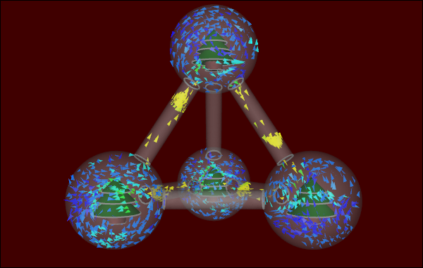

The festive holiday season is once again upon us. What better way to mark the occasion than with a Computational Fluid Dynamics (CFD) doodle. No ordinary doodle though, a mega snow globe CFD doodle. Many a doodle has preceded a great innovation, so get your CFD doodle on and share your Caedium CFD doodles with us. Not sure if CFD doodling is for you? Then check out my latest blog posts that include the top 5 reasons to try CFD and why not all CFD GUIs are equivalent. Finally, I'd like to wish you a Merry Holiday and a prosperous New Year.
Snow Globes CFD Doodle